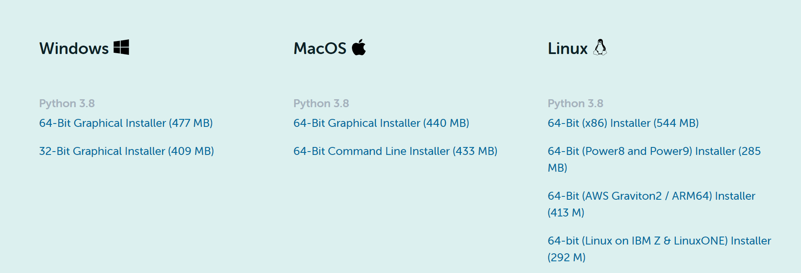
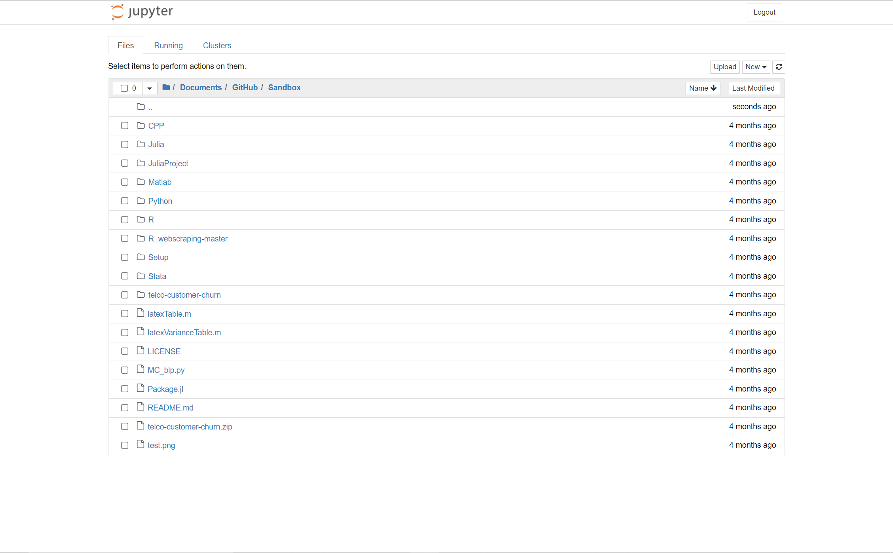

Configure Data Analysis Environment
To get started with this course, we need to set up the environment for data analysis on your PC/Mac. We mainly use two languages for this course, R and Python. You can pick one favorate language to use.
Install Python and Pandas
Anaconda is an open source platform used widely by Python programmers and data scientists. Installing this platform installs Python, the Jupyter notebook application, and hundreds of libraries. The following are the steps you need to follow for installing the Anaconda distribution.
- Open the following URL: Anaconda.
- Click the installer for your operating system, as shown in the following figure. The installer gets downloaded to your system. 
- Open the installer (file downloaded in the previous step) and run the graphic installer. Simply follow the steps indicated.
- Open the Jupyter Notebook on your computer.
Install Packages in Python
Open a terminal on your operation system. If you have a PC, search for a cmd window. If you have a Mac, search for terminal.
For example, if we want to install the linearmodels package in Python, simply type:
pip install linearmodels
Start Jupyter Notebook
Find the App Jupyter Notebook and open the program. It should automatically start in your browser. 
By clicking the “New” button on the upper right corner, we can start a new Python Instance. For more details in Jupyter Notebook, see the introduction and practice using the jupyter notebook.
Install R and Rstudio
-
Installing R is very straightforward. The easiest way is to install it through CRAN, which stands for The Comprehensive R Archive Network. Just visit the CRAN downloads page and follow the links: CTRAN.
-
Once R is installed, you can proceed to install the RStudio IDE to have a much-improved environment to work in your R scripts. It includes a console that supports direct code execution and tools for plotting and keeping track of your variables in the workspace, among other features. RStudio.
Installing Packages in R
Now you have base R installed on your system and a nice IDE to begin your R programming journey. However, base R is rather limited in the things that it can do, which is why we have R packages such as dplyr for enhanced data-wrangling capabilities or ggplot2 for improved data visualizations. There are two simple ways to install R packages using RStudio. The first is to execute the following line of code in the console:
install.packages(c("dplyr","ggplot2"))